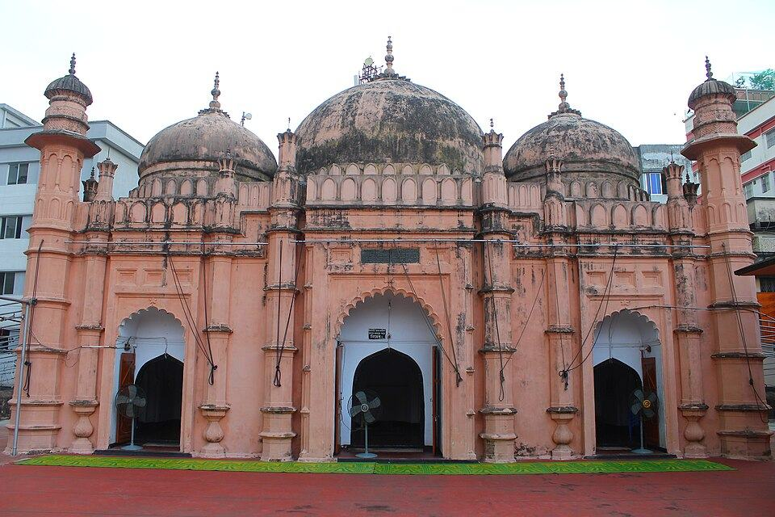

Why go
Climb the steps to a three-domed mosque standing on a platform about 5 m high, with vaulted rooms underneath. Few visitors come, though it is a short walk from Lalbagh Fort.
- Hours
- Open daily outside prayer times.
- Quiet times
- Most of the day outside prayer times
- Busy times
- Friday midday
- Time to spend
- 15–30 min
- How well known
- Hardly known
- Good for
- Solo · Friends
Entry
Free to enter.
Getting there
- Walking
- Some crowds, uneven lanes
- Facilities
- No washroom listed
- Tip
- Steep steps up to the platform.
History
Built around 1704–1706 by Khan Mohammad Mridha under Qadi Ibadullah. The platform holds vaulted rooms (tahkhana); the site also had a madrasa.
Photos
Shoot up the staircase to the domes; the platform gives a view over the lane roofs. Inside: Ask permission.
Nearby
- Maa Shahi Haleem & Nihari4 min walk
- Lalbagh Fort6 min walk
- Dhakeshwari National Temple10 min walk
- Medina Mishtanna Bhandar11 min walk